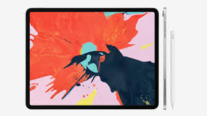
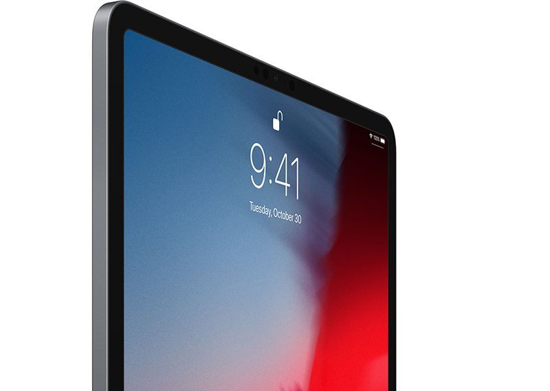

It's all new, all screen and all powerful. Completely redesigned and packed with our most advanced technology, it will make you rethink what iPad is capable of.
The new Liquid Retina display goes from edge to edge. True-to-life colour and ProMotion technology make everything look gorgeous and feel responsive.

Face ID comes to iPad. It’s engineered for secure unlocking and works seamlessly whether you hold it in portrait or landscape.

1.)The iPad Pro display has rounded corners that follow a beautiful curved design, and these corners are within a standard rectangle. When measured as a standard rectangular shape, the screen is 12.9 inches or 11 inches diagonally (actual viewable area is less).
2.)Compared with the previous generation.
3.)Apple Pencil, Smart Keyboard Folio and USB-C device cables are sold separately.
4.)Data plan is required. 4G LTE Advanced, 4G LTE and Wi-Fi calling are available in selected markets and through selected carriers; please check with your carrier to see if these are available where you live. Speeds are based on theoretical throughput and vary based on site conditions and carrier. For details on LTE support, contact your carrier and see www.apple.com/in/ipad/LTE.
Battery life varies by use and configuration. See www.apple.com/in/batteries for more information.
5.)Some features, applications and services may not be available in all regions or all languages. Click here to see the complete list.
Adobe Photoshop CC will be available on iPad in 2019. UI is subject to change.
Apps are available on the App Store. Title availability is subject to change. Some content may not be available in all countries or regions.